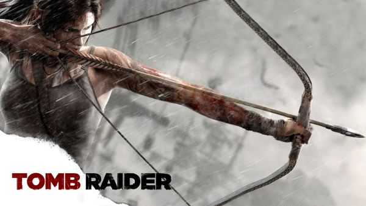

Tomb Raider
Info
Tomb Raider is a 2013 action-adventure video game developed by Crystal Dynamics and published by Square Enix's European subsidiary. It is the tenth title in the Tomb Raider franchise, and operates as a reboot that reconstructs the origins of Lara Croft.Tomb Raider was first released on 5 March 2013 for Microsoft Windows, PlayStation 3 and Xbox 360. Tomb Raider is set on Yamatai, an island from which Lara, who is untested and not yet the battle-hardened explorer she is in other titles in the series, must save her friends and escape while being hunted down by a malevolent cult.Widely anticipated, the game suffered a delayed release from late 2012 to March 2013. Upon release, Tomb Raider received critical acclaim, with critics praising the graphics, gameplay, Luddington's performance as Lara, and Lara's characterization and development, although the addition of a multiplayer mode was not well received and some reviewers directed criticism towards the game ludonarrative dissonance.
Gameplay
Tomb Raider is a linear story campaign and on it’s initial release was single player only. The campaign takes roughly 10 hours to complete, and you play as the famous Protagonist Lara Croft. The story takes place in 2013 and Lara and her crew are shipwrecked on a mysterious island. Alone, Lara must find her friends but throughout the game you come upon a cult that worships a goddess name Himiko, the sun queen. As you explore more of the island you realize how dangerous escaping is. The Spirit of Himiko still lives on the island and she traps who ever set foot on the island by encapsulating the island with an enormous storm, letting no one leave. Lara must figure out how to lift the curse of Himiko and get her friends off the island. Throughout the game you find weapons to defend yourself from the cult and wildlife but also stumble upon survival tools like an Ice axe, rope, fire striker, and a torch. The game is stealth oriented but there are several moments of action packed sequences like running off a collapsing bridge, ziplining through an exploding cave system, and even scaling a mountain with a tornado.There is no slow moment in the game.
Personal Opinion

I got Tomb Raider when I bought my Xbox 360 in 2013 and the game came with the box as a bundle. This was the only game I had for many months so it was the only game I could play. I played several times through the campaign on every difficulty, and I never seemed to get bored with the same story. It has a great story and it is easy to follow especially for a young kid like myself, and the environments you get to play through are all beautiful and unique. From Dense forests, snowy mountain tops, or narrow escapes from cave, this game has multiple areas to explore. I enjoyed the combat weather you wanted to sneak around guards or to just go guns blazing this game had both ways. There were puzzles that you had to solve using the tools you were equipped with and that’s what made it unique. It was not all just killing enemies and running around, you could go off the beaten path and explore to help you either look for supplies that helped upgrade your equipment or even go into tombs to look for gold and artifacts. This made the game feel more open than what it seemed. Going into the tombs, looking for upgrades, or even looking for historic artifacts were all optional for the player, it had no real effect towards the games progress. Doing those types of objectives makes the game feel longer to play. Personally I have played the game 10 times through and I always discover something new. Making single player games Re-playable is a very difficult task to follow so when I play a game multiple times it is special to me in regards that I can play it over and over and not get sick and tired of the same story. Tomb Raider is a fantastic game and I do not hear enough people talk about it and I wish more people knew about how special this game really is.
Game Trailer
Reviews and Purchase Info
Metacritic-86/100
IGN-9.1/10
IMDB-8.7/10
This game can be bought on Steam for $14.99